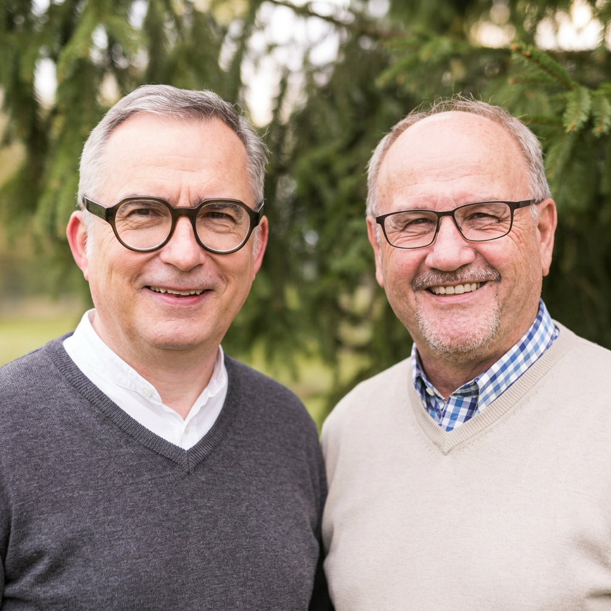
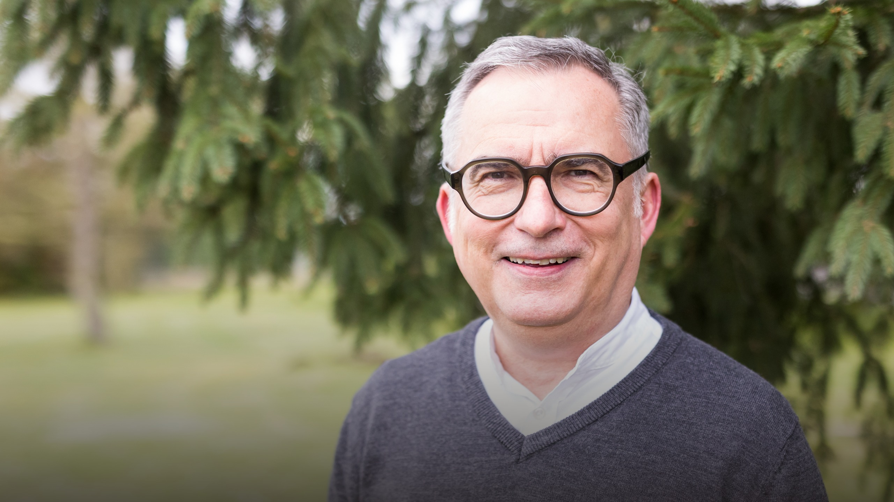
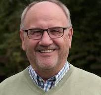

Interesse
Am Anfang steht die schlichte Frage: Wer bist du, und was bewegt dich?
Eine Einladung an die Mitglieder der FBG eG Berlin
Michael Deck und Hans-Jürgen Brozio laden zu echten Gesprächen ein – jenseits von Geschäft und Tagesordnung. Aus Gottes Perspektive geht es zuerst um Beziehung.

Unsere Einladung
Was verändert sich, wenn wir zuerst nach dem Menschen fragen – bevor wir nach dem Geschäft fragen?
Aus Gottes Perspektive geht es in erster Linie um Beziehungen. Eine Gesellschaft, die trägt, entsteht nicht aus Verträgen allein, sondern aus echtem Interesse aneinander. Deshalb suchen wir das Gespräch mit den Mitgliedern der FBG eG Berlin – ohne Agenda, mit offenem Ohr.
Unser Weg zueinander
Kein Programm, das abgearbeitet wird. Ein Weg, der sich Schritt für Schritt öffnet – wenn beide Seiten bereit sind.
Am Anfang steht die schlichte Frage: Wer bist du, und was bewegt dich?
Ein erstes Gespräch, offen und ohne Verkaufsabsicht – per WhatsApp verabredet.
Aus wiederholten Gesprächen wächst Vertrauen – und daraus eine echte Beziehung.
Am Ende steht keine Transaktion, sondern eine Gemeinschaft, die trägt.
„Interesse. Gespräch. Beziehung. Gemeinschaft.“
Die tiefste Ebene
Es ist Gleichgültigkeit. Denn selbst Streit setzt noch voraus, dass der andere mir etwas bedeutet. Darum ist Interesse so fundamental – und aus einem einzigen Satz kann etwas Großes entstehen: „Du bist mir nicht gleichgültig.“
Vielleicht baut Gott seine Welt genau so: nicht zuerst durch Institutionen, sondern durch Menschen, die miteinander in Beziehung treten.
„Vielleicht besteht die Aufgabe weniger darin, immer neue Projekte zu schaffen, als die richtigen Menschen miteinander in Beziehung zu bringen – und Räume zu schaffen, in denen zwischen ihnen etwas entstehen kann. Das eigentliche ‚Produkt‘ wäre dann nicht Beratung, Lehre oder Unternehmertum. Es wäre Beziehung, aus der Berufung und Wirkung entstehen können.“
Ein neues Fundament
Warum wir nicht versuchen, alte Strukturen zu verbessern, sondern neu anfangen wollen – mit Beziehung als Fundament.
Andrew Baker · „Aufbruch zur neuen Weltwirtschaft“Jesus versuchte nicht, das römische Weltreich zu verändern. Stattdessen erweckte er ein Volk, das schließlich die Welt auf den Kopf stellte. Jesus legte ein neues Fundament. Er gab eine neue Satzung heraus, einen Vertrag mit neuen Paragraphen und Artikeln für das Leben.
Durch Glauben sah Jesus, was der Vater tat, und führte diese Prinzipien als Gottes Königreich ein. Jede neue Bewegung von Gott fing auf diese Weise an, und auch heute ist es so. Apostel und Propheten versuchen nicht, das alte politische, wirtschaftliche oder religiöse System zusammenzuflicken oder zu reparieren. Stattdessen ergreifen sie die neue Bewegung Gottes und bringen sich darin ein. Sie verlassen das Alte und tauchen ein in den Strom des Glaubens, wodurch Gottes Reich in die Geschäftswelt hineingebracht wird.
Wir dürfen nicht versuchen, das Alte in das Neue zu übertragen. Jesus hatte der Welt damals einfach einen neuen Stempel aufgedrückt. Er wusste, dass sich das Alte früher oder später dem Neuen anpassen würde. Genauso muss es auch heute sein. Alle, die dazu berufen sind, Gottes Reich in das Geschäftsfeld einzuführen, müssen ihre Gedanken und ihre Bemühungen in diese Richtung lenken. Sie dürfen ihre Zeit nicht damit vergeuden, alte Systeme verbessern zu wollen.
Wie wir das angehen
Wir setzen kein Projekt auf, das verwaltet werden muss. Wir gehen einfach los – ein Gespräch nach dem anderen.
Am Anfang steht das Interesse. Am Ende die Gemeinschaft.
Zwei Unternehmer im Gespräch
Michael Deck aus Magdeburg und Hans-Jürgen Brozio verbindet die Überzeugung, dass wirtschaftliches Handeln und echte Beziehung zusammengehören. Gemeinsam suchen sie das Gespräch mit den Mitgliedern der FBG eG Berlin – aus Interesse am Menschen, nicht am Geschäft.

Unternehmer · geistlicher Begleiter
Michael begleitet Unternehmer und Gründer auf ihrem Weg zu Berufung und werteorientiertem Handeln – und sucht dabei zuerst das persönliche Gespräch.
Michael auf WhatsApp schreiben ↗
God@Work Germany · Geistliche Beratung
Hans-Jürgen und seine Frau Katharina sind seit 25 Jahren selbständig im Immobiliengeschäft und beschäftigen sich seit 2011 mit God@Work in Unternehmen. Als Vorstand von God@Work Germany begleitet er Unternehmer dabei, ihr neu entdecktes Potenzial mit Gottes Innovation zu verbinden.
Hans-Jürgen auf WhatsApp schreiben ↗Häufige Fragen
Diese Einladung richtet sich an Mitglieder der FBG eG Berlin. Wenn du nicht sicher bist, ob sie dich betrifft, schreib uns einfach – wir klären das gemeinsam.
Nein. Es geht um das persönliche Gespräch und die Beziehung. Ein Geschäft steht nicht am Anfang und ist auch keine Bedingung dafür.
Ganz einfach über WhatsApp. Eine kurze Nachricht genügt, den Rest besprechen wir dann persönlich.
Erster Schritt
Ein erstes Gespräch beginnt mit einer einfachen Nachricht. Schreib Michael oder Hans-Jürgen direkt auf WhatsApp, wir melden uns persönlich zurück.